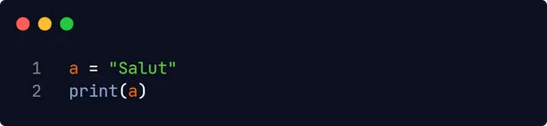
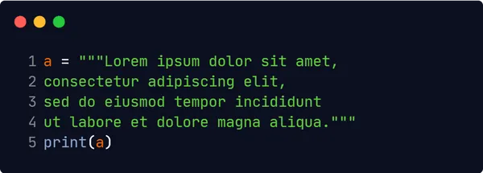
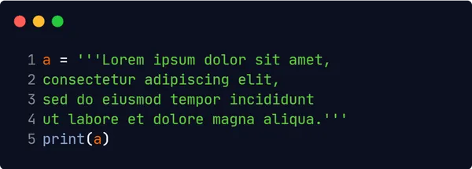

Șirurile din Python sunt înconjurate fie de gilimele simple, fie de ghilimele duble 'salut'
este la fel ca "salut".
Puteți afișa un șir de caractere cu funcția print():
Pentru a atribui un șir de caractere unei variabile veți preciza numele variabile urmată de semnul egal și șirul:
Puteți atribui un șir multiplu unei variabile utilizând trei ghilimele:
sau
Deoarece șirurile sunt matrici, puteți parcurge caracterele dintr-un șir cu o buclă for.
Pentru a obține lungimea unui șir, veți folosi funcția len().
Pentru a verifica dacă o anumită frază sau caracter este prezent într-un șir, puteți folosi cuvântul cheie
in.
De asemenea îl puteți folosi și într-o structură de decizie if.
Pentru a verifica daca o anumită frază sau caracter NU este prezent într-un șir, puteți folosi cuvântul
cheie not in.
De asemenea îl puteți folosi și într-o structură de decizie if.
Python are un set de metode încorporate pe care le puteți utiliza pe șiruri.
Pentru a returna șirul în majuscule veți folosi metoda upper().
Pentru a returna șirul în minuscule veți folosi metoda lower().
Pentru a înlocui un șir cu alt șir veți folosi metoda replace().
Pentru a concatena sau a combina două șiruri puteți utiliza operatorul +
Pentru a adăuga un spațiu între acestea puteți folosi " "